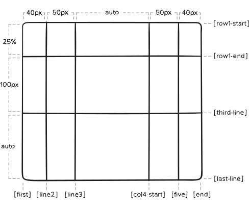
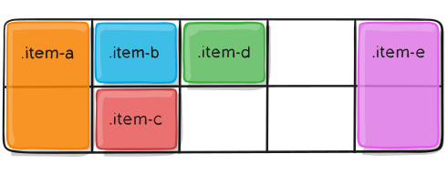

CSS Grid Layout
The CSS Grid Layout Module was developed by the CSS Working Group to provide a better way to create website layouts in CSS. It became a Candidate Recommendation in February 2017, and major browsers started to support grid layout in March 2017.
CSS grid layout is a new layout model optimized for two-dimensional layouts. It's ideal for website layouts, forms, image galleries, and anything that requires precise and responsive positioning.
Values
- grid – generates a block-level grid
- inline-grid – generates an inline-level grid
.container {
display: grid | inline-grid;
}

.container {
display: grid;
grid-template-columns: 100px 100px 100px;
grid-template-rows: 40px 40px 40px;
column-gap: 10px;
row-gap: 10px;
}
Properties for the Children (Grid Items)
Note:
float, display: inline-block, display: table-cell, vertical-align and column-* properties have no effect on a grid item.
grid-column-start
grid-column-end
grid-row-start
grid-row-end
Values:
- <line> – can be a number to refer to a numbered grid line, or a name to refer to a named grid line;
- span <number> – the item will span across the provided number of grid tracks;
- span <name> – the item will span across until it hits the next line with the provided name;
- auto – indicates auto-placement, an automatic span, or a default span of one.

grid-column
grid-row
Shorthand for grid-column-start + grid-column-end, and grid-row-start + grid-row-end.
Values:
- <start-line> / <end-line> – can be a number to refer to a numbered grid line, or a name to refer to a named grid line.
order
Values:
- <integer> / <end-line> – represents the ordinal group to be used by the item.
Items with the lowest order value are placed first in the grid. Items with higher values are placed later. Items which have the same order value will be placed in the order in which they appear in the source document.
Properties for the Parent (Grid Container) display
grid-template-columns
grid-template-rows
Values:
- <track-size> – can be a length, a percentage, or a fraction of the free space in the grid ;
- <line-name> – an arbitrary name of your choosing.

But you can choose to explicitly name the lines. Note the bracket syntax for the line names:

Note that a line can have more than one name. For example, here the second line will have two names: row1-end and row2-start:
If your definition contains repeating parts, you can use the repeat() notation to streamline things:
The fr unit allows you to set the size of a track as a fraction of the free space of the grid container. For example, this will set each item to one third the width of the grid container:
The free space is calculated after any non-flexible items. In this example the total amount of free space available to the fr units doesn’t include the 50px:
grid-template-areas
Defines a grid template by referencing the names of the grid areas which are specified with the grid-area property. The syntax itself provides a visualization of the structure of the grid.
Values:
- <grid-area-name> – the name of a grid area specified with grid-area;
- . – a period signifies an empty grid cell;
- none – no grid areas are defined.
That’ll create a grid that’s four columns wide by three rows tall. The entire top row will be composed of the header area. The middle row will be composed of two main areas, one empty cell, and one sidebar area. The last row is all footer.
grid-template
Values:
- none – sets all three properties to their initial values;
- <grid-template-rows> / <grid-template-columns>– sets grid-template-columns and grid-template-rows to the specified values, respectively, and sets grid-template-areas to none.
That’s equivalent to this:
column-gap, row-gap
Specifies the size of the grid lines.

justify-items

align-items

justify-content

align-content

place-content
Values:
- <align-content> / <justify-content> – the first value sets align-content, the second value justify-content. If the second value is omitted, the first value is assigned to both properties.
grid-auto-columns, grid-auto-rows
Values:
- <track-size> – can be a length, a percentage, or a fraction of the free space in the grid (using the fr unit).


grid-auto-flow
Values:
- row – tells the auto-placement algorithm to fill in each row in turn, adding new rows as necessary (default);
- column – tells the auto-placement algorithm to fill in each column in turn, adding new columns as necessary;
- dense – tells the auto-placement algorithm to attempt to fill in holes earlier in the grid if smaller items come up later.
grid-auto-flow: row

grid-auto-flow: column
Special Functions and Keywords
When sizing rows and columns, you can use all the lengths you are used to, like px, rem, %, etc, but you also have keywords like min-content, max-content, auto, and perhaps the most useful, fractional units.
You also have access to a function which can help set boundaries for otherwise flexible units. For example to set a column to be 1fr, but shrink no further than 200px. fr could be used only for max value.
CSS Grid vs Bootstrap
| Criteria | CSS Grid | Bootstrap |
|---|---|---|
| Markup | Has a cleaner markup. The grid layout is not defined in the markup but done in CSS | Requires a div tag for each row and for defining the class tier for specifying the layout in each div tag. This makes code lengthier |
| Column Limitation | Offers a flexible layout with no column limitation. This makes it very easy to have any number of columns | Since the grid is split into 12 columns, any layout that doesn’t add up to 12 is difficult to materialize |
| Responsiveness | Even if HTML remains the same, just add different media queries to the CSS and define the grid layout for each HTML element | One can define content area layout individually for different device sizes using predefined class tiers. But this makes the markup more difficult, as they increase the number of div classes |
| Page Load Speed | Well supported by most browsers and versions. No downloads are required and the page load speed is faster | The stylesheet supporting files have to be downloaded which slows down the page load speed |
Most browsers shipped native, unprefixed support for CSS Grid: Chrome (including on Android), Firefox, Safari (including on iOS) and Opera.
Try it now!
Click the link to play 'GRID GARDEN'